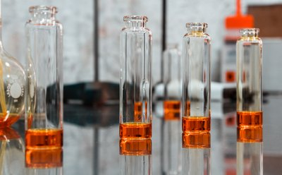

ВСЕ О ДУХАХ И ПАРФЮМЕРИИ
Данный блог предназначен для тех кто хочет узнать больше о мире парфюмерии, научиться азам парфюмерного искусства, узнать историю парфюмерии и прочитать жизнеописания знаменитых парфюмеров а также много другое...
Данный блог предназначен для тех кто хочет узнать больше о мире парфюмерии, научиться азам парфюмерного искусства, узнать историю парфюмерии и прочитать жизнеописания знаменитых парфюмеров а также много другое...
Натуральная парфюмерия: за и против
21 марта 2021 г.
Задумывались ли Вы - зачем люди пользуются духами, парфюмированными и туалетными водами, дезодорантами, одеколонами и дымками для тела?
Натуральная парфюмерия безопасней синтетической? Нет. Духи, состоящие из натуральных материалов, гораздо более опасны, чем синтетические. Натуральное сырьё потенциально аллергенно и может вызывать различные негативные реакции со стороны кожи и дыхательной системы. Например, масло корицы часто является причиной покраснений и зуда. Неочищенное от бергаптена масло бергамота прямого отжима фотосенсибильно и способно вызвать ожоги при попадании на кожу солнечных лучей. Синтетическое сырьё в этом плане менее опасно, поскольку перед попаданием на рабочие столы парфюмеров проходит контроль организации, специализирующейся на изучении вредного воздействия парфюмерных ингредиентов. Однако это вовсе не значит, что синтетические компоненты абсолютно безопасны — индивидуальная реакция человеческого организма может быть негативной не только на натуральное, но и на синтетическое сырьё, хоть и гораздо реже.
Вся нишевая парфюмерия — натуральная? Нет. Это заблуждение возникло из распространённого стереотипа о том, что синтетическое сырьё дешевле натурального, и если нишевая парфюмерия стоит дорого, то она создана только из натуральных ингредиентов. Нишевые производители точно также используют синтетику, но вдобавок к ней могут себе позволить использовать и качественное натуральное сырьё, зачастую влияющее на конечную цену. Синтетические ингредиенты бывают разные, в том числе и очень дорогие, превосходящие по цене многие виды натуральных.
Чем больше в формуле натурального сырья, тем красивей духи? Нет. Красота аромата — субъективная оценка. Качественная парфюмерная композиция — результат интеллектуального труда креативного директора и парфюмера, имеющего вкус, знания и опыт. Полностью натуральные духи нередко кажутся сложными, грязными, недостаточно стойкими и шлейфовыми. Это обусловлено характеристиками исходных ингредиентов. Парфюмеры-химики давно разработали синтетические ингредиенты, превосходящие по стойкости и диффузности все натуральные. К тому же созданное в лабораториях сырьё способно улучшать свойства натурального.
Натуральная парфюмерия не похожа на ту, которую можно найти в большинстве супермаркетов и парфюмерных бутиков. Да. Промышленная парфюмерия целиком и полностью опирается на синтетическое сырьё, позволяющее парфюмерам создавать тонкие, сложные, изящные, чистые, но при этом стойкие и шлейфовые ароматы. Более того, некоторые ароматы просто невозможно получить из природного материала. Так, например, не существует эфирных масел, абсолютов и конкретов сирени, ландыша, цветов фиалки и т. д. Технически их можно получить, но запах продукта не будет иметь ничего общего с запахом этих цветов в живой природе.
Срок хранения натуральных ароматов выше, чем у синтетических? Это зависит от конкретной формулы. Некоторые натуральные ингредиенты (например, смолы и бальзамы, некоторые древесные материалы) иногда выступают в качестве консервирующих агентов, предохраняющих композицию от порчи. Но это вовсе не гарантирует аромату полную сохранность. В неправильных условиях хранения (высокие температуры, резкие климатические перепады, высокая влажность) страдает как натуральная, так и синтетическая/полусинтетическая композиция. Промышленное производство подразумевает не только душистые вещества и спирт в составе парфюмерного продукта, но также и антиокислители, ультрафиолетовые присадки (всё — синтетического происхождения) и т. д. Это позволяет подлить срок службы продукта.
Источник: https://aromo.ru/segments/natural-perfumes/
Лучшие подарки любимым на праздник

17 июня 2021 г.
Что нужно женщине, которая знает себе цену, которая не хочет "быть как все", которая не следует стереотипам, а ищет, находит и подчеркивает свою индивидуальность.
Есть женщины в русских, да и зарубежных, селеньях, обладающие удивительным талантом всегда и везде выглядеть безупречно. В самых щекотливых обстоятельствах, будь то приём у дантиста, плацкартный вагон в поезде «Москва-Владивосток» или мытьё полов, они, каким-то непостижимым для простых смертных образом, умудряются сохранять идеально выглаженный костюм, замечательно аккуратную прическу и полное присутствие духа.
Окружающие обоего пола относятся к ним со смешанным чувством восхищения и благоговейного ужаса. Если вам посчастливилось быть одной из этих небожительниц, то, наверное... вам очень трудно купить духи. Да-да, невероятно, но факт: дамы с безупречным вкусом нередко испытывают очень большие сложности при выборе аромата.
Почему? Возможно, причина в том, что в процессе эволюции обоняние развилось раньше других систем восприятия, и связано оно с тем отделом головного мозга, который отвечает за эмоции, а не за разум. Рискну предположить, что иногда вас одолевают такие сильные сомнения относительно того, подходит ли тот или иной запах к вашему имиджу, что вы предпочитаете махнуть на все рукой и, как говорят, «пахнуть чистотой».
И совершенно напрасно! С помощью правильно подобранного аромата вы сможете не только придать своему облику завершенность и целостность, но и, при желании или необходимости, добавить чуть-чуть пикантности, раскованности или эротичности.
Elanor Parfums
Натуральные духи - взгляд изнутри
5 июля 2021 г.
Натуральные духи создаются из натуральных компонентов - эфирных масел, тинктур (настоек), конкретов и абсолютов.
Натуральная парфюмерия — это подраздел нишевого сегмента, к которому относятся бренды, не использующие в своих ароматах синтетические компоненты. Такие композиции состоят только из натуральных материалов – эфирных масел, смол и других сложных органических веществ, получаемых из продуктов как растительного, так и животного происхождения (цибетин, серая амбра, мускус, кастореум). Современные марки натуральной парфюмерии начали появляться в конце 1990-х–начале 2000-х годов, однако было бы неверно утверждать, что сегмент возник именно в эти десятилетия. В прошлом все духи можно было назвать «натуральными» — так было до второй половины XIX века, когда химики синтезировали первые вещества, затем нашедшие употребление в парфюмерной промышленности. Одной из первых композиций в истории, соединяющей искусственные и природные одоранты, была Jicky, созданная Эме Герленом и появившаяся на прилавках в 1889 году. Но это не означает, что открытие новых методов сделало всю парфюмерию синтетической; сегодня формулы большинства представленных на рынке ароматов сочетают искусственные ингредиенты с природными. Всплеск появления новых брендов, позиционирующих свою продукцию как натуральную, пришёлся на 2000-е годы и совпал с модой на естественность и близость к природе. Помимо прочего, wellness-индустрия транслирует принципы экологичности, осознанности и социальной ответственности, но вместе с тем поддерживает гламуризацию всего с приставкой «био-». Как в сферах моды и красоты, так и в парфюмерии, натуральность — это тренд, не имеющий под собой доказательной научной базы; он является атрибутом определённого образа жизни и способом самовыражения, но не необходимостью.
Источник: https://aromo.ru/segments/natural-perfumes/
Из чего состоят натуральные духи?
5 августа 2021 г.
Согласно правилам Гильдии натуральных парфюмеров (http://www.naturalperfumers.com), состав композиций может включать: эфирные масла; абсолюты; CO₂-экстракты; тинктуры; цветочные воски; цветочные воды; и ряд растительных изолятов (экстрактов, полученных с помощью фракционной перегонки и содержащих только один или несколько ароматических компонентов). Однако не все бренды натуральной парфюмерии являются членами Гильдии; такие марки могут руководствоваться иными принципами при создании композиций. В качестве базы духов на натуральной основе используется как масло, так и спирт. При этом нельзя утверждать, что природные душистые вещества натуральны на 100%. Часто их выделение из растения невозможно без применения химических процессов (например, нагрева) или взаимодействия с растворителями и другими материалами. Поэтому почти любой «натуральный» компонент содержит, по сути, искусственные соединения, не существующие в природе — это прямое следствие технологии их получения. Извлечение душистой субстанции часто подразумевает разрушение первоначальной ароматной составляющей, поэтому экстракты или эфирные масла многих цветов не используются — их запах не похож на запах живого растения. Также не следует путать натуральную парфюмерию с органической. Основное различие между ними — и в условиях, при которых было получено сырьё, и в том, соответствует ли вся деятельность бренда экологическим нормам. Материал может считаться органическим только в том случае, если на всех стадиях его производства соблюдались правила безопасности: от состояния почвы, в которой произрастало растение, до всех последующих этапов сбора и обработки душистого сырья. Чтобы иметь право позиционировать себя как органическую, марка не только должна использовать исключительно то сырьё, которое отвечает требованиям выше, но и придерживаться принципов экологичности и этичности в вопросах тестирования аромата, разработки упаковки и утилизации отходов. Многие косметические производители используют приставки «био-» и «эко-» в исключительно маркетинговых целях; подобная псевдоэкологичность получила название «гринвошинг». Чтобы иметь легитимные основания разместить соответствующую маркировку на товаре, марка должна пройти аккредитацию одной из регулирующих организаций. Среди самых известных — Cosmebio и Ecocert (Франция), ICEA (Италия), USDA Organic (США), а также GEN (The Global Ecolabelling Network) — ассоциация международно признанных экомаркировок, единственным российским сертификатом в составе которой является «Листок жизни»
Источник: https://aromo.ru/segments/natural-perfumes/
Особенности натуральной парфюмерии
14 августа 2021 г.
Многие пользователи, описывая натуральные духи, часто говорят о различимых «грязных оттенках». Безусловно, большую роль здесь играет особенность восприятия, но ароматы этого жанра в ряде случаев действительно имеют более сложное звучание. Многие поклонники отмечают, что это делает натуральные композиции ближе к запахам в том виде, в котором они существуют в природе, но без громких, нарочито вычищенных синтетических черт. Однако эта оценка также очень субъективна, а если говорить о точном воспроизведении аромата конкретного растения, то ситуация здесь обратная. В большинстве случаев душистые вещества, полученные из природного сырья, не пахнут как живое растение — это связано с особенностями производства, описанными выше. Искусственные компоненты звучат отчетливее, в то время как природные — абстрактнее; для многих последнее является преимуществом. Однако обратная сторона медали — особый характер таких веществ, зачастую воспринимаемый как излишняя горечь, аптечность, брутальность. В общем, как и во всех прочих областях, это — вопрос вкуса». Химический состав природных ароматических материалов сложнее, чем синтетических, и этот аргумент часто приводят сторонники жанра, считающие, что натуральные туалетные и парфюмерные воды по умолчанию будут раскрываться бо́льшим спектром оттенков. Однако это не так; во-первых, сложность композиции, как и её красота — субъективная оценка, а во-вторых, ключевую роль в конечном результате играет мастерство и эстетический вкус авторов — парфюмера и креативного директора, а не вид сырья.
Выведенные в лаборатории синтетические компоненты отличаются стабильностью, их свойства хорошо изучены. Каждый натуральный материал, напротив, уникален; на его ароматические характеристики влияют погодные условия и экологическая обстановка места, в котором он рос. Например, эфирное масло розы урожая разных лет имеет немного разный химический состав, что влияет на конечный продукт: так, собранные по одной и той же формуле духи могут незначительно отличаться в оттенках запаха. Поклонники натуральной парфюмерии часто видят в этом преимущества — отсутствие массовости и осознание ограниченности ресурса, а бренды, обычно использующие в своих работах не только природные ингредиенты, выпускают миллезимы.
Натуральные и искусственные компоненты выполняют разные роли в построении композиции. «Синтетика» составляет каркас, в то время как природные одоранты придают аромату объем, вносят определённую «шумность». Разный химический состав этих двух видов ингредиентов придаёт духам разные технические характеристики: как правило, полностью натуральный парфюм обладает меньшей диффузностью и стойкостью, сидит ближе к коже.
Сочетание природных и синтетических компонентов даёт мастеру наибольшую свободу творчества. Исключая искусственные материалы, автор оказывается ограничен в инструментах для воплощения художественного замысла. Современной парфюмерной промышленности недоступны эфирные масла, абсолюты или конкреты многих цветов; также невозможно экстрагировать кожу, сладости и фрукты (кроме цитрусовых). Более того, в настоящее время использование многих природных одорантов ограничено или находится под запретом. Основные причины исключения вещества из перечня доступных — угроза исчезновения вида растения, неэтичность способа добычи (это касается животных материалов: мускуса, цибетина, кастореума) и вероятность причинения вреда здоровью человека. Потенциальная опасность. Риск возникновения аллергической реакции на натуральные компоненты гораздо выше, чем на синтетические. Вторые также могут оказаться причиной индивидуальной непереносимости, но гораздо реже. Исследованием безопасности ароматических веществ занимается институт парфюмерных материалов RIFM (Research Institute for Fragrance Materials): в число его основных задач входит изучение и тестирование парфюмерных ингредиентов. Контроль выполнения стандартов, разработанных RIFM, осуществляет международная парфюмерная ассоциация IFRA (International Fragrance Association).
Риск возникновения аллергической реакции на натуральные компоненты гораздо выше, чем на синтетические. Вторые также могут оказаться причиной индивидуальной непереносимости, но гораздо реже. Исследованием безопасности ароматических веществ занимается институт парфюмерных материалов RIFM (Research Institute for Fragrance Materials): в число его основных задач входит изучение и тестирование парфюмерных ингредиентов. Контроль выполнения стандартов, разработанных RIFM, осуществляет международная парфюмерная ассоциация IFRA (International Fragrance Association).
Источник: https://aromo.ru/segments/natural-perfumes/